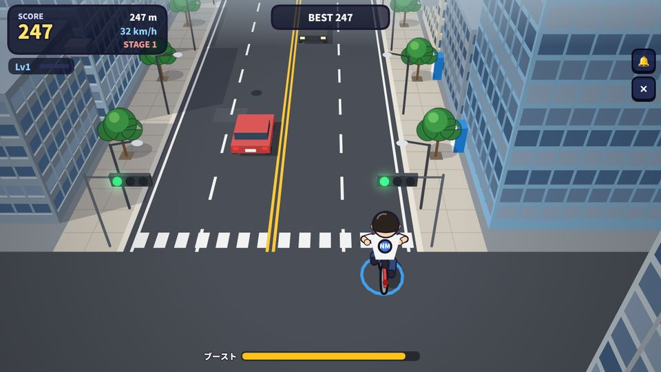
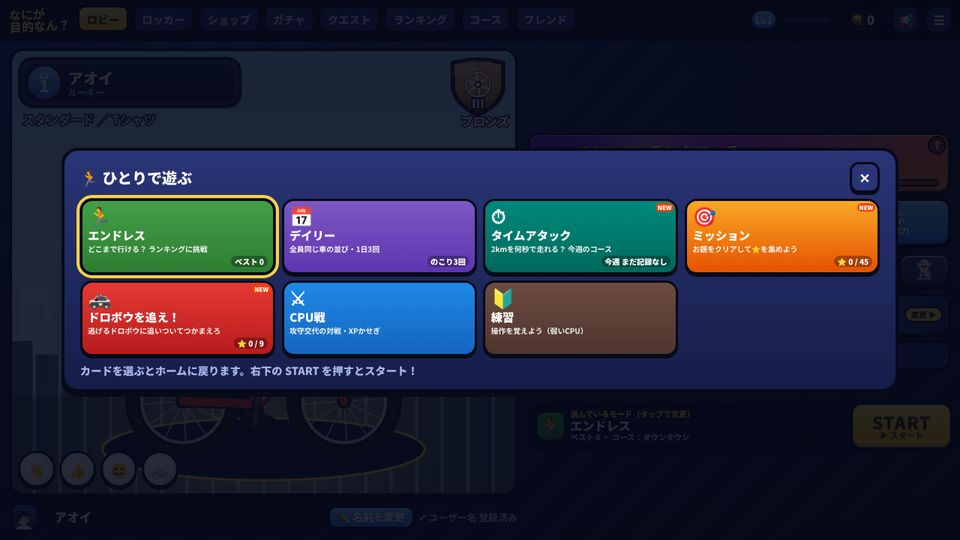
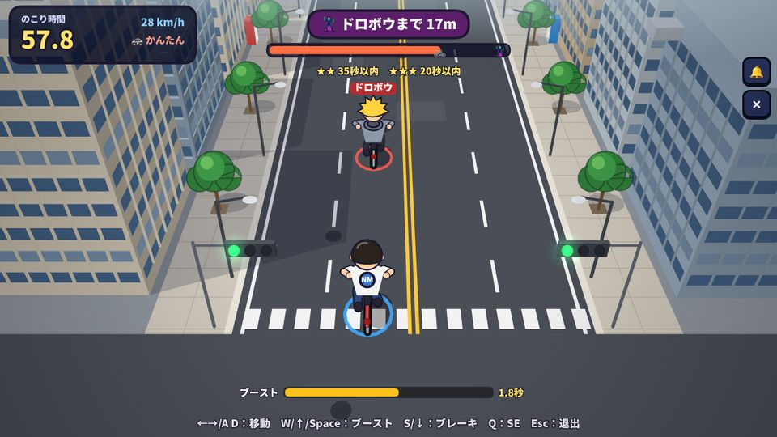
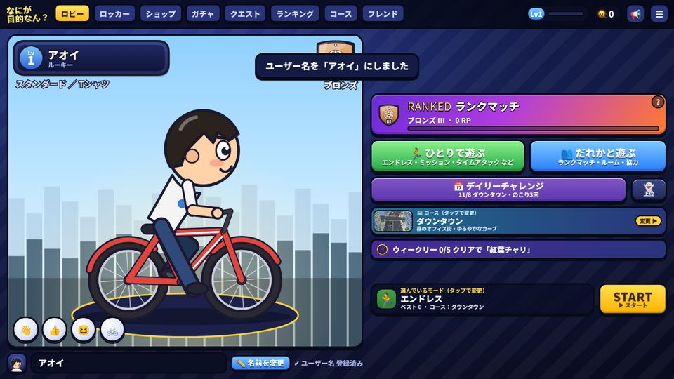

なにが目的なん？ ONLINE
無料で遊べるオンライン自転車ゲーム
「なにが目的なん？」は、インストール不要でブラウザからすぐ遊べる、無料の自転車ゲームです。車やパトカーが走る街の道路を自転車でかけぬけ、オンライン対戦で相手を抜いたり、抜かれないように逃げたり。2人で協力するモードや、ひとりでじっくり遊べるモードもあります。スマホ・タブレット・PCに対応しています。

モード一覧
👥 だれかと遊ぶ（オンライン）
🏆 ランクマッチ
同じくらいの強さの人と自動でマッチングするオンライン対戦。勝つとRP（ランクポイント）が増えて、ブロンズ→シルバー→ゴールド→プラチナ→ダイヤモンド→マスター→殿堂自転車とランクが上がります。
🏠 ルームで対戦
ルームを作って6桁のコードを友だちに教えれば、1対1で対戦できます。コースも選べます。
🤝 協力モード
2人で1台の自転車を動かす協力プレイ。1人は右へ動く＋ブースト、もう1人は左へ動く＋ブレーキ担当。息を合わせて車やパトカーから逃げきろう！
対戦のルール：前を走る「逃げる側」と、後ろから追いかける「抜く側」を交代しながら戦い、先に4ポイント取ったほうの勝ち。同点ならサドンデスで決着します。
🏃 ひとりで遊ぶ
🏃 エンドレス
どこまで走れるかに挑戦。スコアは全国ランキングに載ります。上位の人の走りを「ゴースト」として表示して、いっしょに走ることもできます。
📅 デイリーチャレンジ
その日は全員が同じコース・同じ車の並びで走る、1日3回までの勝負。今日のランキング上位にはプレゼントがあります。
⏱ タイムアタック
2kmを何秒で走れるかを競います。コースは毎週月曜日に変わり、週のランキング1〜3位にはごほうびがあります。
🎯 ミッション
「ブレーキ禁止で1,000m」「パトカーに4回抜かれる」などのお題に挑戦する全15ステージ。条件をクリアして⭐を集めよう。
🚓 ドロボウを追え！
前を逃げる自転車ドロボウに追いついて、つかまえるモード。かんたん・ふつう・むずかしいの3段階。
⚔ CPU戦・練習
コンピューターと対戦して、操作になれたり経験値をかせいだりできます。

遊び方・操作方法
| 操作 | スマホ・タブレット | PC（キーボード） |
|---|---|---|
| 左右に動く | 左下のスティック | ← → または A D |
| ブースト（加速） | 右下の「ブースト」ボタン | W ／ ↑ ／ Space |
| ブレーキ | 「ブレーキ」ボタン | S ／ ↓ |
- 車・バス・工事のコーンにぶつかるとアウト。ギリギリですりぬける（ニアミス）とボーナス点とコンボがつきます。
- 後ろからパトカーが来たら、道をゆずらないと逮捕されてしまいます。
- ブーストは使うとしばらくたまるまで使えません。画面下のゲージで、たまり具合が見られます。
- 泥（どろ）を踏むとスピードが落ちます。

ゲームの特徴
- 完全無料・インストール不要：ブラウザで開くだけ。ホーム画面に追加すればアプリのように起動できます。
- 着せかえ：自転車・髪型・服・アクセサリー・走ったあとのエフェクト（トレイル）を、ガチャやショップで集めて着せかえられます。
- クエスト・レベル：毎日のクエストやウィークリーをこなして経験値とコインをためよう。
- フレンド・観戦・リプレイ：フレンドの試合を観戦したり、自分のいいプレイをリプレイで見返したりできます。
- 季節のイベント：クリスマスなど、期間限定のアイテムや演出があります。

コース
街・海沿い・夜の繁華街・峠道・雪山など、8つのコースがあります。
- ダウンタウン（昼のオフィス街・ゆるやかなカーブ）
- 夕焼けベイサイド（海沿いのカーブが続く道）
- ネオンナイト（大きな直角コーナーの繁華街）
- 下町商店街（S字カーブの昭和レトロ商店街）
- ワインディング峠（急カーブと峠越えの山道）
- 住宅街の坂道（坂の多いのんびり住宅街）
- 雪山ヒルクライム（急な坂を登る雪の峠道）
- 坂の街ナイト（夜景の坂道と直角コーナー）
よくある質問
お金はかかりますか？
かかりません。すべて無料で遊べます。ゲーム内のコイン（NC）は、遊ぶとたまるゲームの中だけのコインです。
インストールは必要ですか？
必要ありません。スマホ・タブレット・PCのブラウザでページを開くだけで遊べます。
友だちと遊べますか？
遊べます。ルームを作って6桁のコードを教えると、1対1の対戦や、2人で協力する協力モードで遊べます。
登録は必要ですか？
メールアドレスなどの登録はいりません。ユーザー名を決めるだけで始められます。
スマホは縦向きでも遊べますか？
横向きで遊ぶゲームです。スマホを横にしてください。